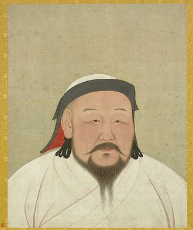

Kublai (/ˈkuːblaɪ/; Mongolian: Хубилай, romanized: Hubilai; Chinese: 忽必烈; pinyin: Hūbìliè) was the fifth Khagan (Great Khan) of the Mongol Empire (Ikh Mongol Uls), reigning from 1260 to 1294 (although due to the division of the empire this was a nominal position). He also founded the Yuan dynasty in China as a conquest dynasty in 1271, and ruled as the first Yuan emperor until his death in 1294.
Kublai was the fourth son of Tolui (his second son with Sorghaghtani Beki) and a grandson of Genghis Khan. He succeeded his older brother Möngke as Khagan in 1260, but had to defeat his younger brother Ariq Böke in the Toluid Civil War lasting until 1264. This episode marked the beginning of disunity in the empire.[1] Kublai's real power was limited to China and Mongolia, though as Khagan he still had influence in the Ilkhanate and, to a significantly lesser degree, in the Golden Horde.[2][3][4] If one counts the Mongol Empire at that time as a whole, his realm reached from the Pacific Ocean to the Black Sea, from Siberia to what is now Afghanistan.[5]
In 1271, Kublai established the Yuan dynasty, which ruled over present-day Mongolia, China, Korea, and some adjacent areas, and assumed the role of Emperor of China. By 1279, the Mongol conquest of the Song dynasty was completed and Kublai became the first non-Han emperor to conquer all of China.
The imperial portrait of Kublai was part of an album of the portraits of Yuan emperors and empresses, now in the collection of the National Palace Museum in Taipei. White, the color of the royal costume of Kublai, was the imperial color of the Yuan dynasty.[6]
Khan of the Mongol Empire December 1271 - Feb 1294 Managed the worlds largest emipre in recorded history and instigated the pax monogolia which opened up silk road to the Europeans to allow diplomatic and trade relations between Europe and Asia.
Founder & Operator of KUBLAI KHAN'S KRAZY MONGOLOIAN STIR FRY AND SUSHI BAR December 1271 - Present
Steppe Nomad Semtember 1215 - December 1271
Genghis Khan's school for horse riding lessons Semtember 1219